Building Blocks
Building Blocks
For my building blocks I was ideating at home and could not think of anything. Then while going through my day I ran into an
issue and I found this to be the perfect seed to start working from. To paint a picture: I have very little power outlets
in my bedroom, and on both sides I have nightstands which have a lamp on them. Now I recently got an electric blanket and
this required a new outlet, but since the cable was very short I had to move the power strip, which meant I could not have both lamps.
That is when it hit me; modular power strips. What if you could, instead of just building a whole new power strip, just modify the one you have?
What if you could add a cable in between without chaining multiple power strips together? This is what I wanted to build, a modular power strip that you can easily modify and add to.
I started with the main piece; a block with a grounded outlet. Each side has a little power port.
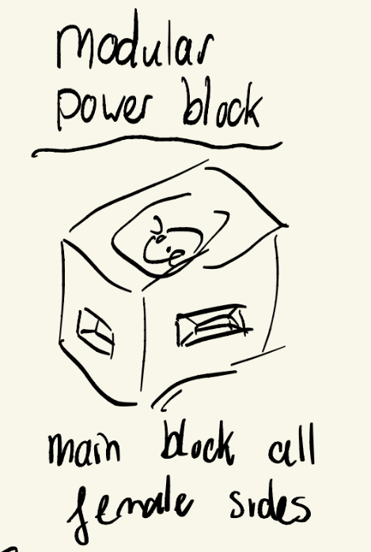This power port can be connected using a connector piece. These little connectors ensure that power can be connected safely without causing a fire hazard or being dangerous for children. They connect between two little blocks.
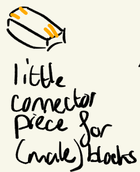One issue I wanted to tackle was that most power strips have their outlets too close, making it impossible to use some plugs next to eachother. A simple spacer can solve this. The spacer could also have functions such as a switch or a led light.
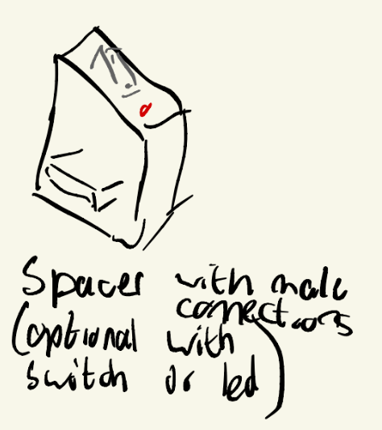Like I said my main issue is that I need both sides of the bed to have power. Why not make it so you can add a cord in between? This will just go into two different blocks and will allow you to have whatever space you need between two outlets. It can also be used as the cable between the block and the wall.
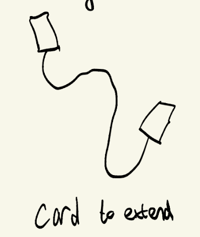And this would go into the wall. Ideally you want it to be flush with the wall, either having power go up or down. Different ports could be on all sides to allow users to decide which side they want the cable to go out of. Also depending on whether their outlet is grounded or not, they can choose the one that is more bulky or the one that is more flat.
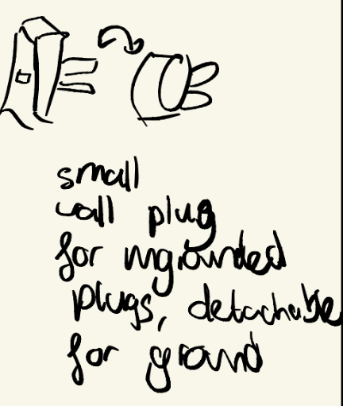And while we were at grounded vs ungrounded, if we are already ungrounded why not offer flat outlets too. This might be easier to keep under the bed. Most outlets in the Netherlands outside of the kitchen are ungrounded, so this would be a good option for many people.
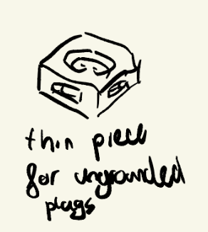I currently have to use a converter to charge my phone or projector, having a usb port would be a nice addition to the power strip. This could be added as a block or as a connector, or be placed on the spacer.
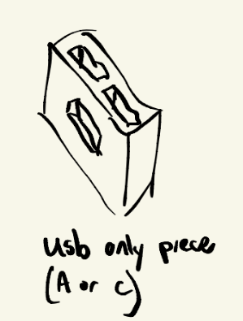Sample implementations
Below I created a sample configuration of how it could be used for a bed. On one side you'd have two outlets and a spacer with usb port and led indicator, to power my blanket, a lamp and my phone. On the other sides I only have a single outlet. These could be extended if I needed to in the future, limiting fire hazard (I am forced to chain together strips right now) and allowing me to have the perfect setup for my needs.
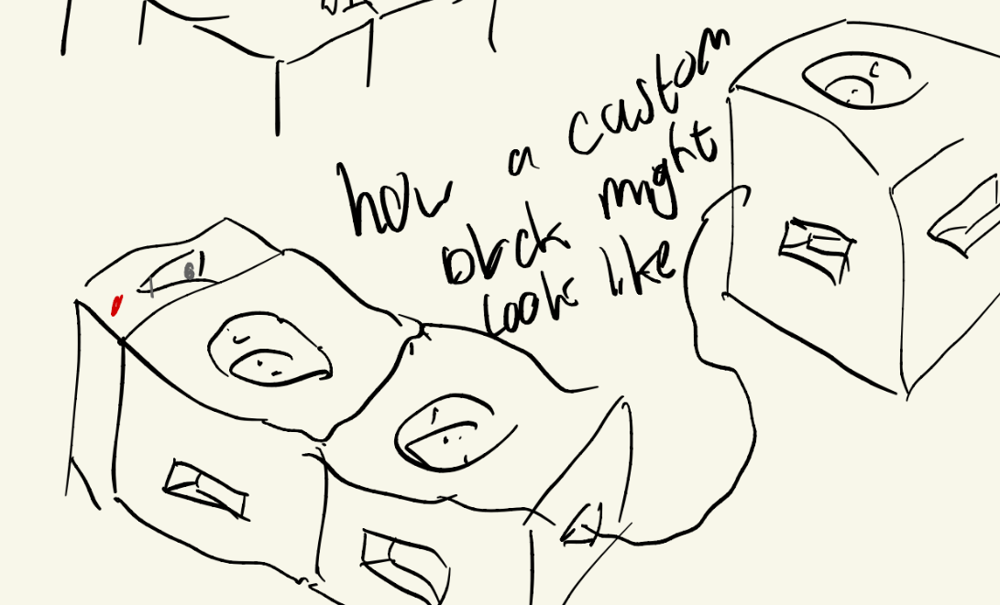This is a more zoomed out version of the bed sample in the room.

It could be used for a whole arrangement of different areas. Here's a sample how it could be used in offices, making it easy to give power to different desks.
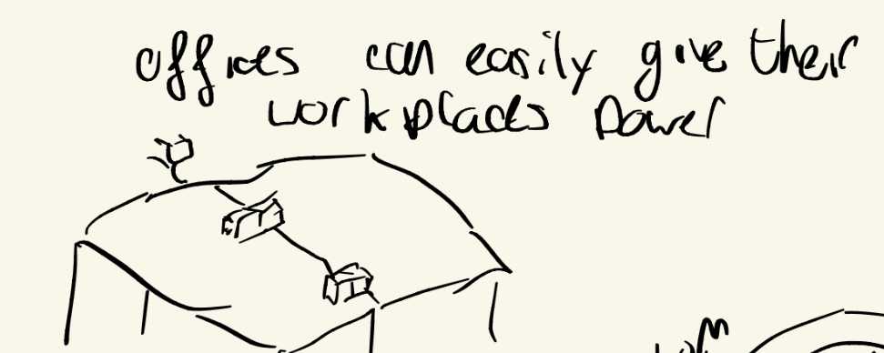Full Sketch
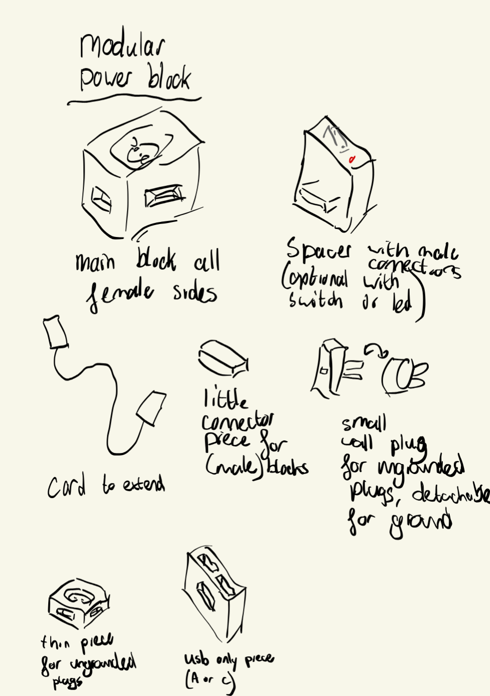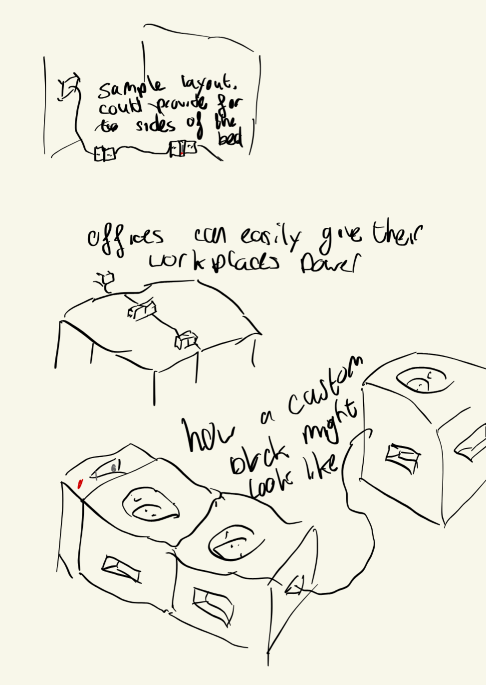